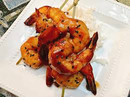

Hot Honey Shrimp

Sticky, tangy, and just a little sweet heat. Serve it as an appetizer, on
skewers if you like, or feel free to add shrimp to some stir fry vegetables for
dinner.
Ingredients
sauce
- 1/2 cup reduced-sodium soy sauce
- 2 tablespoons brown sugar
- 1 tablespoon hot honey, such as Mike's, or to taste
- 1/4 teaspoon ground ginger
- 1 teaspoon minved garlic
- 1 teaspoon sesame oil
- 1/4 cup water
- 1 tablespoon cornstarch
shrimp
- 1 pound colossal shrimp, peeled and deveined
- salt and freshly ground black pepper to taste
- 2 tablespoons vegetable oil
- 1 tablespoon black sesame seeds
Steps
- Stir soy sauce, brown sugar, rice vinegar, honey, ginger, garlic, sesame oil,
water, and cornstarch together in a small bowl.Set aside.
- Pat shrimp dry with paper towel. Season with salt and pepper.
- Heat a skillet over medium-high heat. Add vegetable oil; once oil is
shimmering, cook shrimp until tails begin to curl, about 3 minutes.
- Pour in sauce; bring to a simmer and cook until shrimp is bright pink
and opaque and sauce is thickened, about 2 minutes.
- Sprinkle with black sesame seeds and serve.
Home